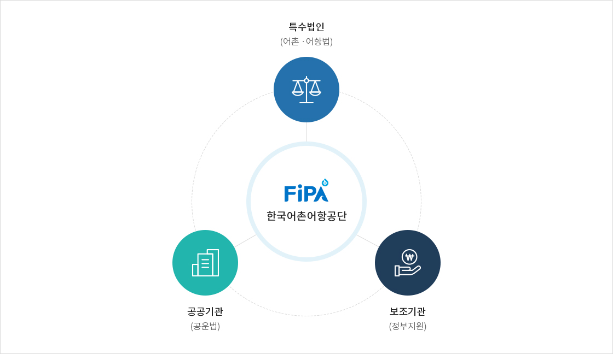
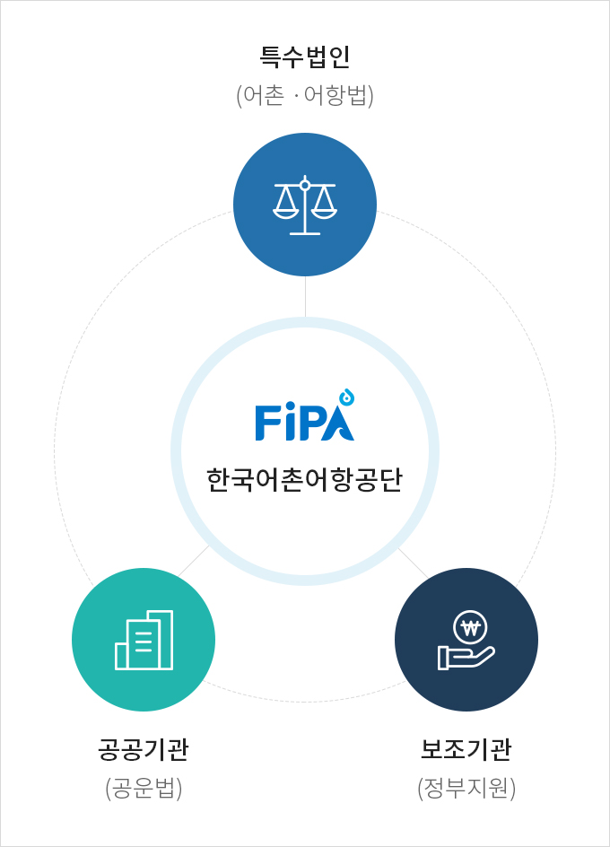

설립목적
- 홈
- 기관소개
- 일반현황
- 설립목적
설립목적
- 어촌 및 어항의 개발 및 관리, 어장의 효율적인 보전 및 이용, 관련 기술의 개발·연구, 관광 활성화 등을 효율적으로 수행하기 위함
설립근거
- 어촌ㆍ어항법 제57조
성격


주요기능
- 어촌ㆍ어항 및 어장에 관한 조사ㆍ연구 및 정보화
- 어촌ㆍ어항의 개발ㆍ관리 및 이와 관련된 기술개발과 국제협력
- 어촌 및 어항 관계자에 대한 교육ㆍ훈련
- 어촌종합개발사업 및 어항개발사업에 수반되는 조사ㆍ측량ㆍ설계ㆍ감리 및 기술에 관한 용역업무 또는 시설물 안전점검ㆍ유지ㆍ보수 및 준설에 관한 위탁업무
- 국가ㆍ지방자치단체 또는 공공단체가 위탁하는 사업
- 어촌ㆍ어항 및 연안수역의 정화ㆍ정비ㆍ조사와 관련된 사업
- 어촌ㆍ어항과 관련된 도서의 발간ㆍ보급 및 홍보
- 어촌ㆍ어항 및 어장과 관련된 관광자원의 개발ㆍ관리 및 관광 활성화 사업
- 그 밖에 공단의 목적달성을 위하여 필요한 사업